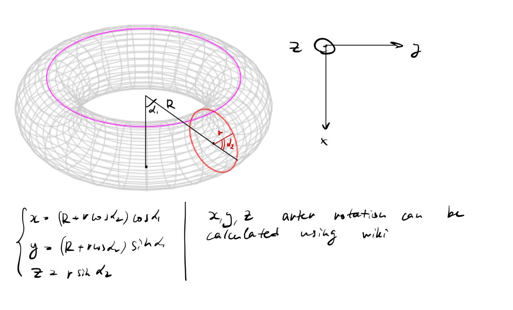

You need to enable JavaScript to run this app.
Rotating Torus
The math behind it is actually pretty easy.
Calculate the point position on torus based on its alpha_1, alpha_2 values
Rotate the point based on phi_1 (along y-axis), phi_2 (along x-axis)
